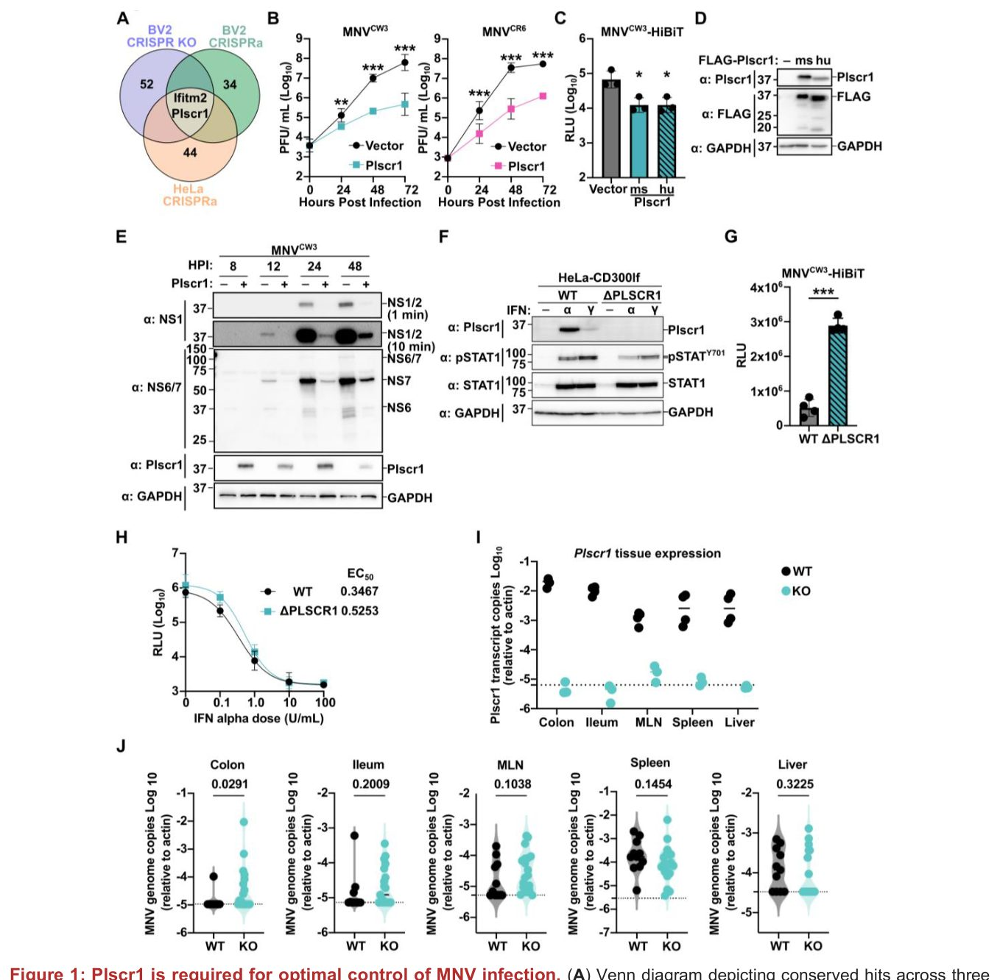
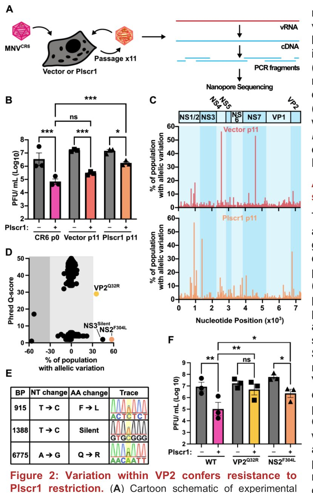
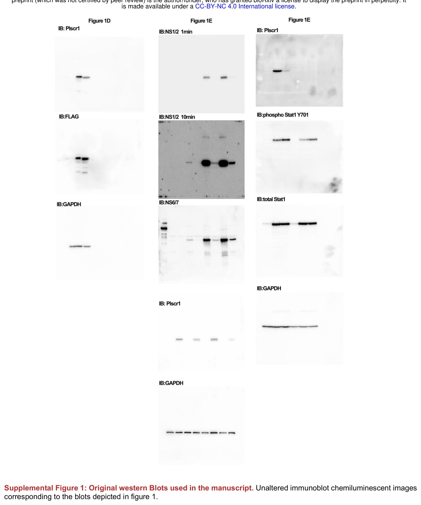
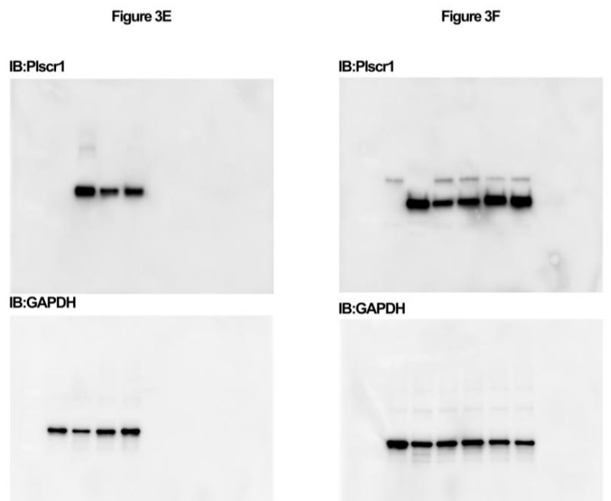

Plscr1 ақуызы тышқан норовирусының енуін тежейді


Суреттің толық сипаттамасы
1-сурет: Plscr1 MNV инфекциясын оңтайлы бақылау үшін қажет. (A) Үш түрлі скрининг бойынша сақталған «хиттерді» (оң нәтижелерді) көрсететін Венн диаграммасы. (B) Бос векторды немесе Plscr1 экспрессиялайтын HeLa-CD300lf жасушалары 0,05 инфекция көптігімен (MOI) MNVCW3 (сол жақта) немесе MNVCR6 (оң жақта) жұқтырылды. Вирустық өнімділік бляшка әдісімен (PFU; бляшка түзуші бірліктер) есептелді. (C) Тышқан немесе адам Plscr1 экспрессиялайтын HeLa-CD300lf жасушалары 48 сағат ішінде 0,5 MOI MNVCW3-HiBiT-пен зақымдалды. Инфекция Nano-Glo HiBiT Lytic Detection System (RLU; салыстырмалы люминесценция бірліктері) көмегімен сандық түрде анықталды. (D) Көрсетілген антиденелермен боялған, FLAG-белгісі бар тышқан (ms) немесе адам (hu) Plscr1 экспрессиялайтын HeLa-CD300lf жасушаларының өкілдік вестерн-блоты. (E) Векторлық бақылауды немесе Plscr1 экспрессиялайтын, 5,0 MOI MNVCW3-пен жұқтырылған және инфекциядан кейінгі көрсетілген сағаттарда (hpi) лизис жасалған HeLa-CD300lf жасушаларының өкілдік вестерн-блоты. (F) Интерферонмен өңделмеген, 1000 бірлік/мл интерферон α немесе 0,1 мкг/мл интерферон γ-мен өңделген және көрсетілген антиденелермен боялған HeLa-CD300lf немесе HeLaΔPlscr1-CD300lf жасушаларының өкілдік вестерн-блоты. (G) HeLa-CD300lf немесе HeLaΔPlscr1-CD300lf жасушалары 0,5 MOI MNVCW3-HiBiT-пен зақымдалды. 48 сағаттан кейін инфекция Nano-Glo HiBiT Lytic Detection System көмегімен сандық түрде анықталды. (H) HeLa-CD300lf немесе HeLaΔPlscr1-CD300lf жасушалары интерферон α-ның көрсетілген дозаларымен (бірлік/мл) өңделді, содан кейін 48 сағат ішінде 0,5 MOI MNVCW3-HiBiT-пен зақымдалды. Инфекция Nano-Glo HiBiT Lytic Detection System көмегімен сандық түрде анықталды. Көрсетілген жасуша түрлері үшін интерферон α-ның 50% тиімді концентрациясы (EC50) есептелді. (I) Plscr1+/+ (WT) немесе Plscr1-/- (KO) бір туысқан жануарлардағы көрсетілген тіндердегі Plscr1 экспрессиясы. Үзік сызық анықтау шегін көрсетеді. (J) Plscr1+/+ (WT) немесе Plscr1-/- (KO) бір туысқан жануарлар 1 x 10^6 PFU MNVCW3-пен жұқтырылды және инфекциядан 3 күн өткен соң эвтаназия жасалды. Тоқ ішек, мықын ішегі, шажырқай лимфа түйіндері (MLN), көкбауыр және бауыр MNV геном көшірмелері үшін qPCR арқылы талданды және актин бойынша қалыпқа келтірілді. Әрбір тін үшін скрипка диаграммасымен (violin plot) бірге жеке деректер нүктелері көрсетілген. Манн-Уитни тестінің P-мәндері келтірілген. Үзік сызық анықтау шегін көрсетеді. Барлық деректер үш тәуелсіз эксперименттің орташа мәні ± стандартты ауытқу ретінде ұсынылған және Тьюкидің көптік салыстыру тестімен бір факторлы дисперсиялық талдау (ANOVA) (B және C), T-тест (G) немесе Манн-Уитни тесті (J) көмегімен талданды. *P < 0,05, P < 0,01, *P < 0,001, ****P < 0,0001.
Норовирустар ішек инфекцияларын тудырады және жасушаларға күрделі молекулалық механизмдер арқылы енеді. Зерттеушілер Plscr1 ақуызы вирусқа қарсы «күзетші» қызметін атқарып, оны ену сатысында бөгейтінін анықтады. Бұл жаңалық иммундық жүйенің вирустың таралуын қалай шектейтінін түсінуге көмектеседі.
Басты ойлар
- Plscr1 тышқан норовирусының жасушаға енуін шектейді
- Plscr1 тапшылығы вирус репликациясының өсуіне әкеледі
- Ақуыз вирустың эндосомамен қосылуына кедергі жасайды
Толығырақ
Норовирустар (Caliciviridae тұқымдасы) инфекцияны бастау үшін жасуша бетіндегі арнайы рецепторларды пайдаланады. Бұл зерттеуде мембранадағы липидтердің таралуына қатысатын Plscr1 (фосфолипид-скрамблаза 1) ақуызының рөлі зерттелді. Авторлар вирустық бөлшектердің жасушалық құрылымдармен өзара әрекеттесуін талдау үшін тышқан норовирусы (MNV) моделін қолданды.
Тәжірибелер Plscr1 ақуызының вирустың цитозольге ену қабілетін шектейтінін көрсетті. Жасушаларда Plscr1 гені өшірілгенде (нокаут), вирустық жүктеменің айтарлықтай өсуі байқалды, бұл ақуыздың қорғаныс функциясын растайды. Әсер ету механизмі мембрана қасиеттерінің өзгеруімен байланысты, бұл вирус қабығының эндосомамен қосылуына кедергі келтіреді.
Шектеулер
Зерттеу тышқан моделінде жүргізілген, сондықтан адам норовирустарымен өзара әрекеттесу механизмдері өзгеше болуы мүмкін.
Мақаланың толық талдауы
Түйіндеме
Норовирустар бүкіл әлемде гастроэнтериттің негізгі себептерінің бірі болып қала береді, алайда олардың репликациясын шектейтін жасушалық механизмдер толық зерттелмеген. CRISPR-активация және CRISPR-нокаут көмегімен жүргізілген геномдық скрининг арқылы зерттеушілер интерферонмен ынталандырылатын Plscr1 генін тышқан норовирусының (MNV) көбеюін шектейтін фактор ретінде анықтады. Бұрын Plscr1 қабықшалы вирустардың эндоцитарлық мембраналармен қосылуына кедергі келтіретіні белгілі болған, сондықтан оның қабықшасыз MNV-ге қарсы антивирустық белсенділігі күтпеген нәтиже болды.
Түсіндірме
CRISPR-скрининг — бұл жасушалардағы мыңдаған гендерді өшіру (нокаут) немесе белсендіру (активация) арқылы олардың вирусқа төзімділікке әсерін бақылауға мүмкіндік беретін генетикалық әдіс.
Эксперименттер Plscr1-дің in vitro жағдайында MNV инфекциясын шектеу үшін қажет және жеткілікті екенін, сондай-ақ тышқандардың тоқ ішегіндегі вирус жүктемесін бақылауға қатысатынын көрсетті. Механистикалық талдау Plscr1-дің MNV-дің жасушаға енуін вирус беткейге бекітілгеннен кейінгі кезеңде тоқтататынын анықтады.
Маңызды
Plscr1 вирустың бекітілуінен кейінгі кезеңде жасушаға енуін блоктай отырып, MNV инфекциясын басады.
Абайлаңыз
Зерттеу жасушалық дақылдар мен тышқан модельдері негізінде жүргізілген; нәтижелерді адамдарға қолдану мүмкіндігін анықтау қосымша тексеруді талап етеді.
Кіші капсидтік VP2 ақуызындағы жалғыз аминқышқылдық алмасу вирусты Plscr1 әсеріне төзімді ететіні анықталды. VP2 ақуызы калицивирустардың жасушаға ену процесінде эндоцитарлық мембраналарды тесіп, вирустық РНҚ-ны жеткізу қызметін атқаратындықтан, бұл нәтижелер Plscr1-дің вирус ену процесінің кешкі кезеңдеріне әсер ететінін көрсетеді. Алынған нәтижелер PLSCR1-дің антивирустық белсенділік спектрін қабықшасыз вирустарға дейін кеңейтеді және қабықшалы және қабықшасыз вирустардың жасушаға ену жолдары арасындағы күтпеген байланыс нүктесін анықтайды.
Кіріспе
Норовирустар — вирустық гастроэнтериттің негізгі себепкері болып табылатын қабықшасыз, оң тізбекті РНҚ вирустары. Олардың жаһандық денсаулық сақтау мен экономикаға тигізетін зияны орасан: тек АҚШ-тың өзінде жыл сайынғы шығын 10,6 миллиард долларды құрайды. Адам норовирусын (HNoV) зерттеу in vitro жағдайында өсірудің қиындығына және шағын жануарлар моделінің жоқтығына байланысты ұзақ уақыт бойы шектелген болатын. Адамның ішек энтероидтарын (HIE) ашу арқылы бұл кедергі еңсерілді, алайда HNoV биологиясын зерттеу үшін сенімді жүйелерді құру әлі де күрделі міндет болып қалуда.
Маңызды
Норовирустар айтарлықтай экономикалық шығын келтіреді, ал оларды зерттеу HIE жүйелері мен тышқан модельдерін дамыту арқылы мүмкін болды.
Тышқан норовирусы (MNV) жасушалық желілерде белсенді көбейетіндіктен, ыңғайлы модель ретінде қолданылады. Тышқандарда құсу рефлексі жоқ және диарея сирек кездессе де, MNV мен HNoV геном ұйымдастырылуы, репликация механизмдері және берілу жолдары бойынша ұқсастықтарға ие. MNV штаммдары интерферонға (IFN) сезімталдығы бойынша ерекшеленеді. Мысалы, MNVCW3 штаммы IFN-α/βR−/− тапшылығы бар тышқандар үшін өлімге әкеледі, ал I және III типті IFN сигналдары ішектегі туфт жасушаларында инфекцияны шектейді.
Түсіндірме
Энтероидтар (HIE) — ішек дің жасушаларынан алынған үш өлшемді құрылымдар, олар ішек қызметін имитациялайды және бұрын өсіруге келмеген вирустарды зерттеуге мүмкіндік береді.
IFN норовирус патогенезінде маңызды рөл атқарғанымен, норовирусты шектейтін нақты интерферон-стимулданған гендер (ISG) әлі белгісіз. CRISPR/Cas9 скрининг деректерін талдау арқылы авторлар фосфолипид-скрамблаза 1 (PLSCR1) генін MNV шектеуші факторы ретінде анықтады. PLSCR1 интерферонның барлық үш түрімен индукцияланады және қабықшалы вирустардың (мысалы, АИТВ және SARS-CoV-2) мембраналармен қосылуын бөгейтіні белгілі. Бұл жұмыста PLSCR1-дің MNV сияқты қабықшасыз вирустарды шектей алатындығы зерттеледі.
Абайлаңыз
Зерттеу тышқан моделіне негізделген; нәтижелерді адамға тікелей қатыстыруға болмайды, себебі вирус пен иесінің өзара әрекеттесу механизмдері әр түрлі болуы мүмкін.
Нәтижелер
PLSCR1 MNV репликациясын шектеу үшін жеткілікті
Біз антивирустық гендерді анықтау үшін бұрын жүргізілген үш CRISPR-скрининг деректерін талдадық. Бірінші зерттеуде тышқан микроглия жасушалары (BV2) нокаут (CRISPR knockout) әдісімен тексерілді, мұнда MNV инфекциясына сезімталдықты арттыратын гендер таңдалды. Екінші скринингте BV2 жасушаларында гендерді белсендіру (CRISPRa) әдісі қолданылды. Үшінші скрининг (CRISPRa) MNV рецепторы CD300lf-ті экспрессиялайтын HeLa жасушаларында жүргізілді. Талдау көрсеткендей, IFITM2 және PLSCR1 гендері MNV-ге қарсы тұрақты антивирустық белсенділік көрсетеді (Rasm 1A).
Түсіндірме
CRISPR-скрининг — вирустық инфекция кезінде жасушалардың тіршілік қабілетіне әсер ететін гендерді табу үшін геномдағы барлық гендерді өшіру (knockout) немесе белсендіру (CRISPRa) әдісі.
IFITM2 және PLSCR1 интерферонмен стимуляцияланатын гендер (ISG). IFITM2 вирустардың эндомембраналық компартменттерден кіруін блоктайды, ал PLSCR1 қабықшалы вирустардың (мысалы, АИТВ, SARS-CoV-2) мембраналармен қосылуына кедергі жасайды. PLSCR1-дің қабықшасыз вирустарға әсері зерттелмегендіктен, біз оның MNV-ді шектеудегі рөлін зерттедік. HeLa-CD300lf жасушаларында тышқан Plscr1 генінің шамадан тыс экспрессиясы (сверхэкспрессия) MNV штаммдарының (MNVCW3 және MNVCR6) өсуін бақылау жасушаларымен салыстырғанда айтарлықтай бәсеңдетті (Rasm 1B). Тышқан және адам PLSCR1 ақуыздарының тізбегі 75% ұқсас болғанына қарамастан, екі ақуыз да MNV-HiBiT репортерлік жүйесі арқылы MNV репликациясын тиімді басатыны расталды (Rasm 1C, 1D). Plscr1 экспрессиясы бар жасушаларда вирустық ақуыздар деңгейі өте төмен болды (Rasm 1E).
Маңызды
HeLa-CD300lf жасушаларында тышқан немесе адам PLSCR1 генінің шамадан тыс экспрессиясы MNV репликациясын басады, бұл вирус жүктемесі мен вирустық ақуыздар деңгейінің төмендеуімен расталады.
Plscr1 in vitro жағдайында MNV-ді шектеу үшін қажет
PLSCR1-дің қажеттілігін тексеру үшін біз осы ген нокаут етілген HeLaΔPLSCR1-CD300lf жасушалар желісін жасадық (Rasm 1F). PLSCR1 болмаған кезде, HeLaΔPLSCR1-CD300lf жасушаларында MNV-HiBiT репликациясы бақылаумен салыстырғанда артты (Rasm 1G). PLSCR1 тікелей антивирустық агент пе, әлде интерферон жауабын күшейтуші ме, соны анықтау үшін біз IFN-α-ға сезімталдықты салыстырдық. Интерферонмен өңдеу PLSCR1 бар-жоғына қарамастан MNV репликациясын азайтты, бұл ретте EC₅₀ мәндері статистикалық тұрғыдан ерекшеленбеді (Rasm 1H). Бұл PLSCR1-дің интерферон сигналдық жолын модуляцияламай, тікелей антивирустық фактор ретінде жұмыс істейтінін көрсетеді.
Абайлаңыз
Зерттеу in vitro жасушалық желілерінде жүргізілді; нәтижелер бүкіл ағзадағы вирус пен иммундық жүйе арасындағы күрделі өзара әрекеттесуді толық көрсетпеуі мүмкін.
Plscr1 тапшылығы бар тышқандарда тоқ ішекте MNV репликациясының біршама өсуі байқалады
Интерферон сигналдық жолдары MNV инфекциясының in vivo динамикасын реттейді. Алайда, инфекцияны шектейтін нақты ISG эффекторлары жеткіліксіз зерттелген. Зерттеушілер Plscr1-/- тышқандарын пайдаланып, олардың MNV-ге сезімтал тіндеріндегі Plscr1 транскрипттерінің деңгейін бағалады. Жабайы типтегі тышқандарда Plscr1 экспрессиясы тоқ және мықын ішекте ең жоғары болды, ал нокаутталған тышқандарда транскрипттер анықталмады (Сурет 1I). MNVCW3-пен ауыз арқылы зақымданғаннан 3 күн өткен соң (Сурет 1J), вирус геномдары көкбауыр, бауыр және мезентериалды лимфа түйіндерінде (MLN) табылды. Жабайы типтегі тышқандардың ішектерінде вирус іс жүзінде анықталмады. Plscr1 тапшылығы бар тышқандарда көкбауыр, бауыр және MLN-дегі инфекция динамикасы бақылау тобымен бірдей болды, бірақ тоқ ішекте MNVCW3 мөлшерінің статистикалық тұрғыдан маңызды, алайда шамалы өсуі байқалды (Сурет 1J). Мықын ішекте де ұқсас үрдіс байқалды, бірақ ол статистикалық маңыздылыққа ие болмады. Бұл деректер Plscr1-дің тоқ ішекте MNVCW3 репликациясын тежейтінін көрсетеді, бірақ басқа ISG эффекторлары да қатысуы мүмкін.
Суреттің толық сипаттамасы
1-сурет: Plscr1 MNV инфекциясын оңтайлы бақылау үшін қажет. (A) Үш түрлі скрининг бойынша сақталған «хиттерді» (оң нәтижелерді) көрсететін Венн диаграммасы. (B) Бос векторды немесе Plscr1 экспрессиялайтын HeLa-CD300lf жасушалары 0,05 инфекция көптігімен (MOI) MNVCW3 (сол жақта) немесе MNVCR6 (оң жақта) жұқтырылды. Вирустық өнімділік бляшка әдісімен (PFU; бляшка түзуші бірліктер) есептелді. (C) Тышқан немесе адам Plscr1 экспрессиялайтын HeLa-CD300lf жасушалары 48 сағат ішінде 0,5 MOI MNVCW3-HiBiT-пен зақымдалды. Инфекция Nano-Glo HiBiT Lytic Detection System (RLU; салыстырмалы люминесценция бірліктері) көмегімен сандық түрде анықталды. (D) Көрсетілген антиденелермен боялған, FLAG-белгісі бар тышқан (ms) немесе адам (hu) Plscr1 экспрессиялайтын HeLa-CD300lf жасушаларының өкілдік вестерн-блоты. (E) Векторлық бақылауды немесе Plscr1 экспрессиялайтын, 5,0 MOI MNVCW3-пен жұқтырылған және инфекциядан кейінгі көрсетілген сағаттарда (hpi) лизис жасалған HeLa-CD300lf жасушаларының өкілдік вестерн-блоты. (F) Интерферонмен өңделмеген, 1000 бірлік/мл интерферон α немесе 0,1 мкг/мл интерферон γ-мен өңделген және көрсетілген антиденелермен боялған HeLa-CD300lf немесе HeLaΔPlscr1-CD300lf жасушаларының өкілдік вестерн-блоты. (G) HeLa-CD300lf немесе HeLaΔPlscr1-CD300lf жасушалары 0,5 MOI MNVCW3-HiBiT-пен зақымдалды. 48 сағаттан кейін инфекция Nano-Glo HiBiT Lytic Detection System көмегімен сандық түрде анықталды. (H) HeLa-CD300lf немесе HeLaΔPlscr1-CD300lf жасушалары интерферон α-ның көрсетілген дозаларымен (бірлік/мл) өңделді, содан кейін 48 сағат ішінде 0,5 MOI MNVCW3-HiBiT-пен зақымдалды. Инфекция Nano-Glo HiBiT Lytic Detection System көмегімен сандық түрде анықталды. Көрсетілген жасуша түрлері үшін интерферон α-ның 50% тиімді концентрациясы (EC50) есептелді. (I) Plscr1+/+ (WT) немесе Plscr1-/- (KO) бір туысқан жануарлардағы көрсетілген тіндердегі Plscr1 экспрессиясы. Үзік сызық анықтау шегін көрсетеді. (J) Plscr1+/+ (WT) немесе Plscr1-/- (KO) бір туысқан жануарлар 1 x 10^6 PFU MNVCW3-пен жұқтырылды және инфекциядан 3 күн өткен соң эвтаназия жасалды. Тоқ ішек, мықын ішегі, шажырқай лимфа түйіндері (MLN), көкбауыр және бауыр MNV геном көшірмелері үшін qPCR арқылы талданды және актин бойынша қалыпқа келтірілді. Әрбір тін үшін скрипка диаграммасымен (violin plot) бірге жеке деректер нүктелері көрсетілген. Манн-Уитни тестінің P-мәндері келтірілген. Үзік сызық анықтау шегін көрсетеді. Барлық деректер үш тәуелсіз эксперименттің орташа мәні ± стандартты ауытқу ретінде ұсынылған және Тьюкидің көптік салыстыру тестімен бір факторлы дисперсиялық талдау (ANOVA) (B және C), T-тест (G) немесе Манн-Уитни тесті (J) көмегімен талданды. *P < 0,05, P < 0,01, *P < 0,001, ****P < 0,0001.
Маңызды
Plscr1 тапшылығы тоқ ішекте MNV репликациясының аздап артуына әкеледі, бұл ақуыздың ішінара қорғаныс функциясын білдіреді. [!warning] Зерттеу тышқандарда жүргізілді; нәтижелерді адамдарға тікелей қолдануға болмайды.
Генетикалық скрининг Plscr1-ге төзімділікті қамтамасыз ететін VP2 өзгерісін анықтады
Plscr1 әсер ету механизмін зерттеу үшін MNVCR6 вирусы Plscr1 экспрессиялайтын HeLa-CD300lf жасушаларында 11 пассаж бойы бейімделді (Сурет 2A). Plscr1 қатысуымен 11 пассаждан өткен вирус (Plscr1 p11) бақылау тобымен салыстырғанда өсу артықшылығын көрсетті (Сурет 2B). Ампликондарды тізбектей талдау (Сурет 2C, Кесте SN) Plscr1 p11 популяциясында 30%-дан астам жиіліктегі үш генетикалық өзгерісті анықтады (Сурет 2D). Олардың екеуі миссенс-мутациялар (NS2F304L және VP2Q32R; Сурет 2E) болды. Бұл өзгерістерді MNVCR6 молекулалық клонына енгізу тек VP2Q32R мутациясы ғана вирусқа Plscr1 бар жасушаларда өсуге мүмкіндік беретінін көрсетті, бұл оның «қашу» мутациясы екенін растайды (Сурет 2F). Норовирус капсиді VP1 және VP2 ақуыздарынан тұрады. VP2-нің рөлі толық зерттелмегенімен, калицивирустар (FCV) бойынша деректер VP2-нің РНҚ-ның цитоплазмаға енуі үшін порталдық құрылым түзетінін болжайды. Q32R өзгерісінің осы порталдың жиналуына әсері алдағы зерттеулердің тақырыбы болып табылады.


Түсіндірме
«Қашу» мутациясы — вирустың жасушалық қорғаныс тосқауылын, бұл жағдайда Plscr1 ақуызының әсерін жеңіп өтуге мүмкіндік беретін генетикалық өзгеріс. [!tip] Ампликондарды тізбектей талдау — вирустың бейімделу процесінде пайда болған мутацияларды тез анықтауға мүмкіндік беретін әдіс.
Plscr1 MNV-ның жасушаға енуін бекітілуден кейінгі кезеңде шектеу үшін мембранамен әрекеттесетін аймақтарды қажет етеді
VP2 ақуызы вирустың енуіне де, жиналуына да қатысатындықтан, ену кезеңін айналып өту тәжірибесі жүргізілді. MNVCW3 вирустық РНҚ-сын Plscr1 экспрессиялайтын HeLa жасушаларына трансфекциялау вирус титрлерін бақылау жасушаларының деңгейіне дейін қалпына келтірді (3A-сурет). Бұл Plscr1-дің дәл MNV ену сатысын тежейтінін растайды. Вирустың жасушалармен байланысуын талдау CD300lf экспрессиясы MNV байланысуын айтарлықтай арттыратынын көрсетті, алайда Plscr1-дің болуы CD300lf бар-жоғына қарамастан бұл процеске әсер етпеді (3B-сурет). Бұл Plscr1-дің байланысудан кейінгі ену сатысын блоктайтынын көрсетеді.
Маңызды
Plscr1 MNV-ның жасушаға бекітілуінен кейінгі кезеңде енуін блоктайды, оның вирусқа қарсы белсенділігі CD300lf рецепторымен байланысу қабілетіне тәуелді емес.
Plscr1 әсер ету механизмдерін зерттеу үшін ақуыздың мутантты формалары тексерілді. Ядролық локализация сайтындағы мутация (267AISAA271) ақуыз экспрессиясының төмендеуіне әкелді, сондықтан ол талдаудан шығарылды. Әдебиеттерге сәйкес, скрамблаза белсенділігін жоғалтатын Plscr1F290A мутанты HeLa-CD300lf жасушаларында MNV репликациясын блоктай алу қабілетін сақтап қалды (3D және 3E-суреттер). Керісінше, пальмитоилдену сайтының бұзылуы (Plscr1PalmA мутанты, 193AAFPAA198) Plscr1-дің MNV-ны шектеу қабілетін айтарлықтай әлсіретті (3D және 3E-суреттер).
Түсіндірме
Пальмитоилдену — бұл ақуызға май қышқылдарын қосу процесі, ол ақуыздың жасуша мембранасына берік бекітілуіне көмектеседі.
Абайлаңыз
Зерттеу HeLa жасушалық желілерінде жүргізілді; нәтижелер мембраналық ассоциация мен вирусқа қарсы әсер арасындағы корреляцияны көрсетеді, бірақ барлық жасуша түрлері үшін себеп-салдарлық байланысты дәлелдемейді.
Зерттеушілер сонымен қатар адамдардағы COVID-19 ауырлығымен байланысты PLSCR1 полиморфизмдерінің әсерін зерттеді. PLSCR1-дің 262-позициясында гистидин, тирозин немесе глутамин бар нұсқалары MNV репликациясын бірдей деңгейде шектеді (3F және 3H-суреттер). «Адамдық» полиморфизмді (тирозин) тышқан Plscr1-іне енгізу де оның вирусқа қарсы белсенділігін төмендетпеді (3G және 3H-суреттер). Осылайша, Plscr1-дің MNV-ны шектеу механизмі SARS-CoV-2-ге қарсы әсер ету механизмінен ерекшеленеді, өйткені ол 262-позициядағы полиморфизмдерге сезімтал емес.
Талқылау
PLSCR1 ақуызы арқылы MNV вирусының енуін шектеу механизмі
Бұл зерттеуде PLSCR1 ақуызы қабықшасы жоқ тышқан норовирусының (MNV) енуін тежейтіні анықталды. Тежелу процесі вирус жасушаға бекінгеннен кейінгі кезеңде жүреді (Сурет 3A, 3B). VP2 ақуызындағы бір нүктелі мутация (VP2Q32R) вирусқа бұл кедергіні жеңуге мүмкіндік береді (Сурет 2F). VP2 вирус РНҚ-сын эндосомадан цитоплазмаға мембрананы тесу арқылы жеткізетін арна түзеді деп есептесек, PLSCR1 эндоцитарлы мембраналардың қасиеттерін өзгертіп, РНҚ-ның шығуын бөгейді деп болжаймыз. Q32R мутациясы бұл кедергіні қалай айналып өтетіні әзірге белгісіз, бірақ бұл өзгеріс процесті зерттеу үшін генетикалық құрал ретінде қызмет етеді.
Маңызды
PLSCR1 қабықшасыз MNV вирусының енуін шектейді, бұл оны қабықшалы вирустарға қарсы қорғаныс механизмдерімен байланыстырады.
Түсіндірме
ISG (интерферонмен ынталандырылған гендер) — инфекциялармен күресу үшін интерферон әсерінен белсенділігі артатын гендер.
PLSCR1-дің туа біткен иммунитет жүйесіндегі рөлі
PLSCR1 in vitro жағдайында MNV-ні тиімді басу үшін қажет болғанымен, оның жоқтығы I типті интерферон жауабында айтарлықтай өзгерістерге әкелмеді (Сурет 1H). Бұл MNV-ні шектейтін басқа ISG-лердің бар екенін көрсетеді. Plscr1 тапшылығы бар тышқандарда тоқ ішектегі MNVCW3 вирус жүктемесі тек аздап қана өскен (Сурет 1J). Біздің деректеріміз, соның ішінде IFITM2-нің анықталуы, PLSCR1-дің интерферон арқылы қоздырылатын кеңірек қорғаныс тосқауылының бір бөлігі екенін растайды.
Абайлаңыз
Зерттеу жасушалық дақылдар мен тышқан модельдері негізінде жүргізілді; жануарлардағы нәтижелер әрқашан адамға тікелей қатысты болмауы мүмкін.
PLSCR1 функционалды домендері және вирус спецификасы
Біз MNV-ні шектеу үшін фосфолипидті скрамблаза белсенділігі емес, бүтін пальмитоилдену мотиві қажет екенін анықтадық (Сурет 3D). Пальмитоилденуге тәуелділік SARS-CoV-2-ні басу кезінде де байқалады. Алайда, PLSCR1-дің H262 және Y262 нұсқалары MNV-ні бірдей деңгейде шектейді, бұл әртүрлі вирустарға қарсы қорғаныс механизмдеріндегі айырмашылықтарды көрсетеді. Осылайша, PLSCR1 вирустардың ену стратегияларына қарамастан, іргелі түрде ерекшеленетін вирустар кластарына ортақ шектеулер қояды.
Әдістер
Жасуша желілері және өсіру
293T, HeLa және BV2 жасушалары 5% фетальды бұзау сарысуы қосылған DMEM ортасында өсірілді. Тұрақты гиперэкспрессиясы бар жасуша желілері лентивирустық трансдукция әдісімен алынды. Лентивирустық плазмидалар, орау векторы (psPax2) және псевдотиптеу векторы (pCMV-VSV-G) PEI көмегімен 293T жасушаларына енгізілді. 48 сағаттан кейін вирус жиналып, 0,45 мкм сүзгі арқылы өткізілді және нысаналы жасушаларға қосылды. Тағы 48 сағаттан соң орта тиісті антибиотиктермен (350 мкг/мл гигромицин немесе 5 мкг/мл бластицидин және/немесе 1 мкг/мл пуромицин) ауыстырылды. Барлық желілер микоплазманың жоқтығына тұрақты тексерілді.
Түсіндірме
Лентивирустық трансдукция — бұл генетикалық материалды вирус арқылы жасуша геномына енгізу әдісі.
HeLaΔPlscr1 желісін жасау үшін HeLa жасушалары PLSCR1 геніне бағыттаушы РНК-сы бар pSpCas9(BB)-2A-Blast және pSpCas9(BB)-2A-Puro плазмидаларымен трансфекцияланды. 48 сағаттан кейін жасушалар екі күн бойы 5 мкг/мл бластицидин және 1 мкг/мл пуромицин ортасында ұсталып, содан кейін антибиотиксіз ортаға ауыстырылды. Жеке жасушалық клондар бөлініп алынды, геномдық ДНҚ бөлінді және Сэнгер секвенирлеуі арқылы талданды. Нәтижесінде стоп-кодондарға әкелетін делециялары бар аллельдер анықталды.
Вирустық талдаулар
MNVCW3, MNVCR6 және олардың мутанттары 293T жасушаларына трансфекциялау және BV2 жасушаларында көбейту арқылы алынды. Инфекция үшін HeLa-CD300lf жасушалары 96-ұяшықты планшеттерге егіліп, 0,05 MOI (инфекция көптігі) деңгейінде вирустандырылды. Планшеттер 1 сағат бойы бөлме температурасында шайқалып, 37°C және 5% CO2 жағдайында инкубацияланды. Вирус титрлері бляшка әдісімен анықталды. MNV-HiBiT талдауларында 0,5 немесе 5 MOI қолданылды, люминесценттік белсенділік Synergy LX құрылғысы және Nano-Glo HiBiT жүйесі арқылы өлшенді.
Плазмидалық құрылымдар
Plscr1 (тышқан және адам) кДНҚ-сы және мутациялар N-терминалды 3xFLAG белгісімен pCDH-EF1-MCS-IRES-Puro векторына клондалды. MNV молекулалық клондары GenBank (EF014462.1 және JQ237823) деректеріне сәйкес келеді. Барлық плазмидалар қолданылар алдында толық секвенирлеуден өтті.
Иммуноблоттинг
Laemmli буферінде лизис жасалған үлгілер SDS-PAGE әдісімен бөлініп, PVDF мембраналарына ауыстырылды. Мембраналар 5% сүт ұнтағымен блокталды және тиісті антиденелермен (Plscr1, GAPDH, FLAG, STAT1, фосфо-STAT1) және MNV ақуыздарына қарсы антиденелермен инкубацияланды.
Тышқандарды жұқтыру
Жануарларға қатысты зерттеулер Техас университетінің Оңтүстік-батыс медициналық орталығының (UT Southwestern) Жануарларды күту және пайдалану жөніндегі комитетінің бақылауымен жүргізілді. Plscr1-/- тышқандары мен бақылау тобы ретінде олардың бір тумалас серіктері SPF (спецификалық патогендерден таза) жағдайында ұсталды. Жануарлар ауыз арқылы 1 × 10⁶ БОЕ (PFU) MNVCW3 вирусымен жұқтырылды және дереу жеке торларға бөлінді. 3 күннен кейін тышқандар эвтаназияланды және тіндер 1 мм-лік силикат шарларының көмегімен TRIzol ортасында гомогенизацияланды. РНҚ бөлініп алынды және кДНҚ синтезі үшін пайдаланылды. Вирустық геном, актин және Plscr1 көшірмелерінің мөлшері нақты уақыт режиміндегі ПТР (qPCR) әдісімен арнайы праймерлер мен зондтар арқылы бағаланды.
Түсіндірме
Нақты уақыт режиміндегі ПТР (qPCR) — бұл үлгідегі ДНҚ немесе РНҚ көшірмелерінің мөлшерін амплификация процесі кезінде нақты уақытта анықтауға мүмкіндік беретін молекулалық биологиялық әдіс.
Plscr1 төзімділігін анықтауға арналған тікелей генетикалық скрининг
Тәжірибелер BSL2 жағдайында өткізілді. Вектор немесе Plscr1 экспрессиялайтын HeLa-CD300lf жасушалары (2 × 10⁶) MNVCR6 вирусымен 0,05 MOI (жұқтыру көптігі) деңгейінде жұқтырылды. Әр 48–72 сағат сайын вирус пассаждалды (барлығы 11 рет). Соңғы пассаждан кейін вирустық супернатанттан РНҚ бөлініп алынды, кДНҚ синтезделді және MNV геномының 250–3000 жұп негіздік фрагменттері ПТР арқылы күшейтіліп, секвенирленді. Деректер MNVCR6 WT клонымен салыстырылды; Plscr1-ге тән мутацияларды анықтау үшін Plscr1 тобындағы сәйкессіздік пайызынан вектор тобындағы сәйкессіздік пайызы алынып тасталды. Нәтижелер нуклеотидтерді анықтау сенімділігін көрсететін Phred Q көрсеткішімен салыстырылды.
Ену сатысын айналып өту талдауы
MNVCW3-тен бөлініп алынған 4 мкг вирустық РНҚ, бос вектор немесе тышқан Plscr1 экспрессиялайтын HeLa жасушаларына Lipofectamine 3000 көмегімен трансфекцияланды. Маңыздысы, бұл жасушалар CD300lf рецепторын экспрессияламайды, бұл көп циклді инфекциялардың алдын алады. 24 сағаттық инкубациядан кейін үлгілер -80°C-та мұздатылды және вирус титрлері бляшка әдісімен анықталды.
Вирустың байланысуын талдау
2,5 × 10⁵ жасуша 1,6 × 10⁹ БОЕ MNVCR6 вирусымен 5% FBS қосылған DMEM ортасында 4°C температурада 1 сағат бойы араластырылды. Центрифугалаудан (500 g, 5 минут) кейін жасушалар үш рет суық PBS-пен жуылды. Байланысқан вирусты сандық анықтау үшін жасушалардан РНҚ бөлініп алынды және жоғарыда сипатталғандай qPCR өткізілді.




Зерттеу сызбасы
Препринт әлі рецензиядан өтпеген. Қорытындылар алдын ала.
Дереккөз
| Дереккөз | Санат | Препринт лицензиясы |
|---|---|---|
| bioRxiv | microbiology | — |
Дереккөздер
| Дереккөз | Сілтеме |
|---|---|
| DOI | doi.org |
Деректер, код және қосымшалар
| Не | Сипаттама | Сілтеме |
|---|---|---|
| Қосымша | (supplements/752154_file02.xlsx) | media-1.xlsx |
| Қосымша | (supplements/752154_file03.xlsx) | media-2.xlsx |